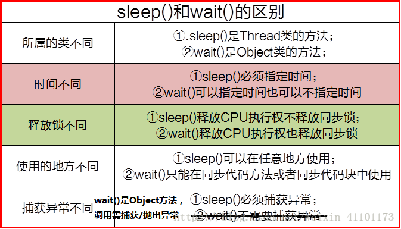

java锁之wait,notify(wait会释放锁，notify仅仅只是通知，不释放锁)
wait是指在一个已经进入了同步锁的线程内，让自己暂时让出同步锁，以便其他正在等待此锁的线程可以得到同步锁并运行，只有其他线程调用了notify方法（notify并不释放锁，只是告诉调用过wait方法的线程可以去参与获得锁的竞争了，但不是马上得到锁，因为锁还在别人手里，别人还没释放），调用wait方法的一个或多个线程就会解除wait状态，重新参与竞争对象锁，程序如果可以再次得到锁，就可以继续向下运行。 1）wait()、notify()和notifyAll()方法是本地方法，并且为final方法，无法被重写。
2）当前线程必须拥有此对象的monitor（即锁），才能调用某个对象的wait()方法能让当前线程阻塞，
（这种阻塞是通过提前释放synchronized锁，重新去请求锁导致的阻塞，这种请求必须有其他线程通过notify()或者notifyAll（）唤醒重新竞争获得锁）
3）调用某个对象的notify()方法能够唤醒一个正在等待这个对象的monitor的线程，如果有多个线程都在等待这个对象的monitor，则只能唤醒其中一个线程；
（notify()或者notifyAll()方法并不是真正释放锁，必须等到synchronized方法或者语法块执行完才真正释放锁）
https://www.cnblogs.com/tiancai/p/8855125.html
wait()会立bai刻释放synchronized（obj）中的obj锁，以便其他线程可du以执行obj.notify() 但是zhinotify()不会立刻立刻释放sycronized（obj）中的daoobj锁，必须要等notify()所在线程执行完synchronized（obj）块中的所有代码才会释放这把锁. yield(),sleep()不会释放锁
start方法和run方法的区别
看线程的状态-lg
线程blocked状态和wait状态的区别
看线程的状态-lg
sleep方法和wait方法的区别
sleep()释放CPU执行权，但不释放同步锁；
wait()释放CPU执行权，也释放同步锁，使得其他线程可以使用同步控制块或者方法。

join方法和wait方法的区别
join方法底层调用了wait方法，
- 当不传入时间，则调用wait(0)方法表示无限等待，
- 当传入时间，则等待对应时间后再结束，否则一直while循环里面调用wait(delay)
sleep方法和yeild方法的区别
相同点在于：
- 都会暂缓执行当前线程；
- 如果已经持有锁，那么在等待过程中都不会释放锁；
不同点在于：
- Thread.sleep()可以精确指定休眠的时间，而Thread.yield()依赖于CPU的时间片划分，在我的电脑上大约为20微秒；
- Thread.sleep()会抛出中断异常，且能被中断，而Thread.yield()不可以；
源码如下：
public static native void sleep(long millis) throws InterruptedException;
public static native void yield();
示例程序如下：
static class YieldLock extends Thread {
private Object monitor;
/**
* @param monitor
*/
@Inject
public YieldLock(Object monitor) {
this.monitor = monitor;
}
public void run() {
synchronized (monitor) {
while(true) {
Thread.yield();
}
}
}
}
static class MonitorLock extends Thread {
private Object monitor;
/**
* @param monitor
*/
@Inject
public MonitorLock(Object monitor) {
this.monitor = monitor;
}
public void run() {
try {
Thread.sleep(1000);
} catch (InterruptedException e) {
e.printStackTrace();
}
synchronized (monitor) {
System.out.println("我能拿到锁！");
}
}
}
/**
* @param args
*/
public static void main(String[] args) {
final Object monitor = new Object();
new YieldLock(monitor).start();
// 下面的这个线程永远拿不到锁
// 所以也不会输出"我能拿到锁！"这句话
new MonitorLock(monitor).start();
}
线程睡眠(sleep) 让当前正在执行的线程暂停一段时间，并进入阻塞状态，则可以通过调用Thread类的静态sleep()方法来实现。当前线程调用sleep()方法进入阻塞状态后，在其睡眠时间内，该线程不会获得执行的机会，而其它任何优先级的线程都可以得到执行的机会，即使系统中没有其它可执行的线程，处于sleep()的线程也不会执行，sleep()是用来暂停线程的执行。
线程让步（yield） yield()方法是一个和sleep()方法有点相似的方法，它也是Thread类提供的一个静态方法。可以让当前正在执行的线程暂停，但它不会阻塞该线程，只是将该线程转入就绪状态。yeild()只是让当前线程暂停一下，让系统的线程调度器重新调度一次，完全可能的情况是：当某个线程调用了yield()线程暂停之后，线程调度器又将其调度出来重新执行。 当某个线程调用了yield()方法暂停之后，只有优先级与当前线程相同，或者优先级比当前线程更高的处于就绪状态的线程才会获得执行机会。 参考
class Yield implements Runnable{
int i=0;
@Override
public void run(){
for(;i<50;i++){
System.out.println(Thread.currentThread().getName()+"->"+i);
//当i等于20时，当前线程让步，让线程调度器重新调度
if(i==10){
Thread.yield();
}
}
}
}
public class YieldThreadTest extends Thread{
public YieldThreadTest(Runnable runnable,String name){
super(runnable,name);
}
public static void main(String[] args) {
Yield yd=new Yield();
YieldThreadTest ytt1=new YieldThreadTest(yd,"高优先级线程");
ytt1.setPriority(Thread.MAX_PRIORITY);//设置优先级最高
ytt1.start();
YieldThreadTest ytt2=new YieldThreadTest(yd,"低优先级线程");
ytt2.setPriority(Thread.MIN_PRIORITY);//设置优先级最低
ytt2.start();
}
}
结果：
"D:\Program Files\Java8\jdk1.8.0_77\bin\java.exe" "-javaagent:D:\Program Files\JetBrains\IntelliJ IDEA 2019.3.4\lib\idea_rt.jar=11463:D:\Program Files\JetBrains\IntelliJ IDEA 2019.3.4\bin" -Dfile.encoding=UTF-8 -classpath "D:\Program Files\Java8\jdk1.8.0_77\jre\lib\charsets.jar;D:\Program Files\Java8\jdk1.8.0_77\jre\lib\deploy.jar;D:\Program Files\Java8\jdk1.8.0_77\jre\lib\ext\access-bridge-64.jar;D:\Program Files\Java8\jdk1.8.0_77\jre\lib\ext\cldrdata.jar;D:\Program Files\Java8\jdk1.8.0_77\jre\lib\ext\dnsns.jar;D:\Program Files\Java8\jdk1.8.0_77\jre\lib\ext\jaccess.jar;D:\Program Files\Java8\jdk1.8.0_77\jre\lib\ext\jfxrt.jar;D:\Program Files\Java8\jdk1.8.0_77\jre\lib\ext\localedata.jar;D:\Program Files\Java8\jdk1.8.0_77\jre\lib\ext\nashorn.jar;D:\Program Files\Java8\jdk1.8.0_77\jre\lib\ext\sunec.jar;D:\Program Files\Java8\jdk1.8.0_77\jre\lib\ext\sunjce_provider.jar;D:\Program Files\Java8\jdk1.8.0_77\jre\lib\ext\sunmscapi.jar;D:\Program Files\Java8\jdk1.8.0_77\jre\lib\ext\sunpkcs11.jar;D:\Program Files\Java8\jdk1.8.0_77\jre\lib\ext\zipfs.jar;D:\Program Files\Java8\jdk1.8.0_77\jre\lib\javaws.jar;D:\Program Files\Java8\jdk1.8.0_77\jre\lib\jce.jar;D:\Program Files\Java8\jdk1.8.0_77\jre\lib\jfr.jar;D:\Program Files\Java8\jdk1.8.0_77\jre\lib\jfxswt.jar;D:\Program Files\Java8\jdk1.8.0_77\jre\lib\jsse.jar;D:\Program Files\Java8\jdk1.8.0_77\jre\lib\management-agent.jar;D:\Program Files\Java8\jdk1.8.0_77\jre\lib\plugin.jar;D:\Program Files\Java8\jdk1.8.0_77\jre\lib\resources.jar;D:\Program Files\Java8\jdk1.8.0_77\jre\lib\rt.jar;D:\idea-workspace3\lqx-project-demo-github\basic-view\target\classes;D:\idea-workspace3\lqx-project-demo-github\basic-server\target\classes;D:\idea-workspace3\lqx-project-demo-github\demo\search\elasticsearch-starter\target\classes;D:\maven\repository\org\springframework\boot\spring-boot-configuration-processor\2.1.6.RELEASE\spring-boot-configuration-processor-2.1.6.RELEASE.jar;D:\maven\repository\org\springframework\boot\spring-boot-starter-json\2.1.6.RELEASE\spring-boot-starter-json-2.1.6.RELEASE.jar;D:\maven\repository\com\fasterxml\jackson\datatype\jackson-datatype-jdk8\2.9.9\jackson-datatype-jdk8-2.9.9.jar;D:\maven\repository\com\fasterxml\jackson\datatype\jackson-datatype-jsr310\2.9.9\jackson-datatype-jsr310-2.9.9.jar;D:\maven\repository\com\fasterxml\jackson\module\jackson-module-parameter-names\2.9.9\jackson-module-parameter-names-2.9.9.jar;D:\maven\repository\org\springframework\boot\spring-boot-starter-data-jpa\2.1.6.RELEASE\spring-boot-starter-data-jpa-2.1.6.RELEASE.jar;D:\maven\repository\javax\transaction\javax.transaction-api\1.3\javax.transaction-api-1.3.jar;D:\maven\repository\org\hibernate\hibernate-core\5.3.10.Final\hibernate-core-5.3.10.Final.jar;D:\maven\repository\antlr\antlr\2.7.7\antlr-2.7.7.jar;D:\maven\repository\org\jboss\jandex\2.0.5.Final\jandex-2.0.5.Final.jar;D:\maven\repository\org\dom4j\dom4j\2.1.1\dom4j-2.1.1.jar;D:\maven\repository\org\hibernate\common\hibernate-commons-annotations\5.0.4.Final\hibernate-commons-annotations-5.0.4.Final.jar;D:\maven\repository\org\springframework\data\spring-data-jpa\2.1.9.RELEASE\spring-data-jpa-2.1.9.RELEASE.jar;D:\maven\repository\org\springframework\spring-orm\5.1.8.RELEASE\spring-orm-5.1.8.RELEASE.jar;D:\maven\repository\org\springframework\spring-aspects\5.1.8.RELEASE\spring-aspects-5.1.8.RELEASE.jar;D:\maven\repository\commons-codec\commons-codec\1.12\commons-codec-1.12.jar;D:\maven\repository\io\springfox\springfox-swagger2\2.7.0\springfox-swagger2-2.7.0.jar;D:\maven\repository\io\swagger\swagger-annotations\1.5.13\swagger-annotations-1.5.13.jar;D:\maven\repository\io\swagger\swagger-models\1.5.13\swagger-models-1.5.13.jar;D:\maven\repository\io\springfox\springfox-spi\2.7.0\springfox-spi-2.7.0.jar;D:\maven\repository\io\springfox\springfox-core\2.7.0\springfox-core-2.7.0.jar;D:\maven\repository\io\springfox\springfox-schema\2.7.0\springfox-schema-2.7.0.jar;D:\maven\repository\io\springfox\springfox-swagger-common\2.7.0\springfox-swagger-common-2.7.0.jar;D:\maven\repository\io\springfox\springfox-spring-web\2.7.0\springfox-spring-web-2.7.0.jar;D:\maven\repository\org\reflections\reflections\0.9.11\reflections-0.9.11.jar;D:\maven\repository\com\google\guava\guava\18.0\guava-18.0.jar;D:\maven\repository\com\fasterxml\classmate\1.4.0\classmate-1.4.0.jar;D:\maven\repository\org\springframework\plugin\spring-plugin-core\1.2.0.RELEASE\spring-plugin-core-1.2.0.RELEASE.jar;D:\maven\repository\org\springframework\plugin\spring-plugin-metadata\1.2.0.RELEASE\spring-plugin-metadata-1.2.0.RELEASE.jar;D:\maven\repository\org\mapstruct\mapstruct\1.1.0.Final\mapstruct-1.1.0.Final.jar;D:\maven\repository\io\springfox\springfox-swagger-ui\2.7.0\springfox-swagger-ui-2.7.0.jar;D:\maven\repository\org\springframework\boot\spring-boot-starter-log4j\1.3.5.RELEASE\spring-boot-starter-log4j-1.3.5.RELEASE.jar;D:\maven\repository\log4j\log4j\1.2.17\log4j-1.2.17.jar;D:\maven\repository\com\alibaba\fastjson\1.2.44\fastjson-1.2.44.jar;D:\maven\repository\org\apache\httpcomponents\httpclient\4.4.1\httpclient-4.4.1.jar;D:\maven\repository\org\apache\httpcomponents\httpcore\4.4.11\httpcore-4.4.11.jar;D:\maven\repository\com\google\code\gson\gson\2.8.5\gson-2.8.5.jar;D:\maven\repository\org\elasticsearch\elasticsearch\6.2.4\elasticsearch-6.2.4.jar;D:\maven\repository\org\elasticsearch\elasticsearch-core\6.2.4\elasticsearch-core-6.2.4.jar;D:\maven\repository\org\apache\lucene\lucene-core\7.2.1\lucene-core-7.2.1.jar;D:\maven\repository\org\apache\lucene\lucene-analyzers-common\7.2.1\lucene-analyzers-common-7.2.1.jar;D:\maven\repository\org\apache\lucene\lucene-backward-codecs\7.2.1\lucene-backward-codecs-7.2.1.jar;D:\maven\repository\org\apache\lucene\lucene-grouping\7.2.1\lucene-grouping-7.2.1.jar;D:\maven\repository\org\apache\lucene\lucene-highlighter\7.2.1\lucene-highlighter-7.2.1.jar;D:\maven\repository\org\apache\lucene\lucene-join\7.2.1\lucene-join-7.2.1.jar;D:\maven\repository\org\apache\lucene\lucene-memory\7.2.1\lucene-memory-7.2.1.jar;D:\maven\repository\org\apache\lucene\lucene-misc\7.2.1\lucene-misc-7.2.1.jar;D:\maven\repository\org\apache\lucene\lucene-queries\7.2.1\lucene-queries-7.2.1.jar;D:\maven\repository\org\apache\lucene\lucene-queryparser\7.2.1\lucene-queryparser-7.2.1.jar;D:\maven\repository\org\apache\lucene\lucene-sandbox\7.2.1\lucene-sandbox-7.2.1.jar;D:\maven\repository\org\apache\lucene\lucene-spatial\7.2.1\lucene-spatial-7.2.1.jar;D:\maven\repository\org\apache\lucene\lucene-spatial-extras\7.2.1\lucene-spatial-extras-7.2.1.jar;D:\maven\repository\org\apache\lucene\lucene-spatial3d\7.2.1\lucene-spatial3d-7.2.1.jar;D:\maven\repository\org\apache\lucene\lucene-suggest\7.2.1\lucene-suggest-7.2.1.jar;D:\maven\repository\org\elasticsearch\securesm\1.2\securesm-1.2.jar;D:\maven\repository\org\elasticsearch\elasticsearch-cli\6.2.4\elasticsearch-cli-6.2.4.jar;D:\maven\repository\net\sf\jopt-simple\jopt-simple\5.0.2\jopt-simple-5.0.2.jar;D:\maven\repository\com\carrotsearch\hppc\0.7.1\hppc-0.7.1.jar;D:\maven\repository\joda-time\joda-time\2.10.2\joda-time-2.10.2.jar;D:\maven\repository\com\fasterxml\jackson\dataformat\jackson-dataformat-smile\2.9.9\jackson-dataformat-smile-2.9.9.jar;D:\maven\repository\com\fasterxml\jackson\dataformat\jackson-dataformat-cbor\2.9.9\jackson-dataformat-cbor-2.9.9.jar;D:\maven\repository\com\tdunning\t-digest\3.0\t-digest-3.0.jar;D:\maven\repository\org\hdrhistogram\HdrHistogram\2.1.9\HdrHistogram-2.1.9.jar;D:\maven\repository\org\apache\logging\log4j\log4j-api\2.11.2\log4j-api-2.11.2.jar;D:\maven\repository\org\elasticsearch\jna\4.5.1\jna-4.5.1.jar;D:\maven\repository\org\elasticsearch\client\rest\6.0.0-alpha1\rest-6.0.0-alpha1.jar;D:\maven\repository\org\apache\httpcomponents\httpasyncclient\4.1.4\httpasyncclient-4.1.4.jar;D:\maven\repository\org\apache\httpcomponents\httpcore-nio\4.4.11\httpcore-nio-4.4.11.jar;D:\maven\repository\org\elasticsearch\client\elasticsearch-rest-high-level-client\6.2.4\elasticsearch-rest-high-level-client-6.2.4.jar;D:\maven\repository\org\elasticsearch\client\elasticsearch-rest-client\6.2.4\elasticsearch-rest-client-6.2.4.jar;D:\maven\repository\org\elasticsearch\plugin\parent-join-client\6.2.4\parent-join-client-6.2.4.jar;D:\maven\repository\org\elasticsearch\plugin\aggs-matrix-stats-client\6.2.4\aggs-matrix-stats-client-6.2.4.jar;D:\maven\repository\org\elasticsearch\plugin\rank-eval-client\6.2.4\rank-eval-client-6.2.4.jar;D:\maven\repository\org\elasticsearch\client\transport\6.2.4\transport-6.2.4.jar;D:\maven\repository\org\elasticsearch\plugin\reindex-client\6.2.4\reindex-client-6.2.4.jar;D:\maven\repository\org\elasticsearch\plugin\lang-mustache-client\6.2.4\lang-mustache-client-6.2.4.jar;D:\maven\repository\com\github\spullara\mustache\java\compiler\0.9.3\compiler-0.9.3.jar;D:\maven\repository\org\elasticsearch\plugin\percolator-client\6.2.4\percolator-client-6.2.4.jar;D:\maven\repository\org\elasticsearch\plugin\transport-netty4-client\6.2.4\transport-netty4-client-6.2.4.jar;D:\maven\repository\io\netty\netty-codec-http\4.1.36.Final\netty-codec-http-4.1.36.Final.jar;D:\maven\repository\org\locationtech\spatial4j\spatial4j\0.6\spatial4j-0.6.jar;D:\maven\repository\com\vividsolutions\jts\1.13\jts-1.13.jar;D:\maven\repository\org\apache\logging\log4j\log4j-core\2.11.2\log4j-core-2.11.2.jar;D:\maven\repository\org\ansj\ansj_seg\5.1.1\ansj_seg-5.1.1.jar;D:\maven\repository\org\nlpcn\nlp-lang\1.7.2\nlp-lang-1.7.2.jar;D:\maven\repository\org\apache\httpcomponents\httpmime\4.5.6\httpmime-4.5.6.jar;D:\maven\repository\org\jsoup\jsoup\1.11.2\jsoup-1.11.2.jar;D:\maven\repository\javax\servlet\javax.servlet-api\4.0.1\javax.servlet-api-4.0.1.jar;D:\maven\repository\javax\persistence\javax.persistence-api\2.2\javax.persistence-api-2.2.jar;D:\maven\repository\org\postgresql\postgresql\42.2.2\postgresql-42.2.2.jar;D:\maven\repository\org\apache\shiro\shiro-core\1.4.0\shiro-core-1.4.0.jar;D:\maven\repository\org\apache\shiro\shiro-lang\1.4.0\shiro-lang-1.4.0.jar;D:\maven\repository\org\apache\shiro\shiro-cache\1.4.0\shiro-cache-1.4.0.jar;D:\maven\repository\org\apache\shiro\shiro-crypto-hash\1.4.0\shiro-crypto-hash-1.4.0.jar;D:\maven\repository\org\apache\shiro\shiro-crypto-core\1.4.0\shiro-crypto-core-1.4.0.jar;D:\maven\repository\org\apache\shiro\shiro-crypto-cipher\1.4.0\shiro-crypto-cipher-1.4.0.jar;D:\maven\repository\org\apache\shiro\shiro-config-core\1.4.0\shiro-config-core-1.4.0.jar;D:\maven\repository\org\apache\shiro\shiro-config-ogdl\1.4.0\shiro-config-ogdl-1.4.0.jar;D:\maven\repository\commons-beanutils\commons-beanutils\1.9.3\commons-beanutils-1.9.3.jar;D:\maven\repository\org\apache\shiro\shiro-event\1.4.0\shiro-event-1.4.0.jar;D:\maven\repository\org\apache\shiro\shiro-web\1.4.0\shiro-web-1.4.0.jar;D:\maven\repository\org\apache\shiro\shiro-spring\1.4.0\shiro-spring-1.4.0.jar;D:\maven\repository\org\apache\shiro\shiro-ehcache\1.4.0\shiro-ehcache-1.4.0.jar;D:\maven\repository\net\sf\ehcache\ehcache-core\2.6.11\ehcache-core-2.6.11.jar;D:\maven\repository\org\springframework\boot\spring-boot-starter-amqp\2.1.6.RELEASE\spring-boot-starter-amqp-2.1.6.RELEASE.jar;D:\maven\repository\org\springframework\spring-messaging\5.1.8.RELEASE\spring-messaging-5.1.8.RELEASE.jar;D:\maven\repository\org\springframework\spring-beans\5.1.8.RELEASE\spring-beans-5.1.8.RELEASE.jar;D:\maven\repository\org\springframework\amqp\spring-rabbit\2.1.7.RELEASE\spring-rabbit-2.1.7.RELEASE.jar;D:\maven\repository\org\springframework\amqp\spring-amqp\2.1.7.RELEASE\spring-amqp-2.1.7.RELEASE.jar;D:\maven\repository\org\springframework\retry\spring-retry\1.2.4.RELEASE\spring-retry-1.2.4.RELEASE.jar;D:\maven\repository\com\rabbitmq\amqp-client\5.4.3\amqp-client-5.4.3.jar;D:\maven\repository\org\apache\poi\poi\4.0.0\poi-4.0.0.jar;D:\maven\repository\org\apache\poi\poi-ooxml\4.0.0\poi-ooxml-4.0.0.jar;D:\maven\repository\org\apache\poi\poi-ooxml-schemas\4.0.0\poi-ooxml-schemas-4.0.0.jar;D:\maven\repository\org\apache\xmlbeans\xmlbeans\3.0.1\xmlbeans-3.0.1.jar;D:\maven\repository\org\apache\commons\commons-compress\1.18\commons-compress-1.18.jar;D:\maven\repository\com\github\virtuald\curvesapi\1.04\curvesapi-1.04.jar;D:\maven\repository\com\xuxueli\xxl-job-core\1.8.2\xxl-job-core-1.8.2.jar;D:\maven\repository\javax\servlet\jsp\jsp-api\2.2\jsp-api-2.2.jar;D:\maven\repository\org\eclipse\jetty\jetty-server\9.4.19.v20190610\jetty-server-9.4.19.v20190610.jar;D:\maven\repository\org\eclipse\jetty\jetty-http\9.4.19.v20190610\jetty-http-9.4.19.v20190610.jar;D:\maven\repository\org\eclipse\jetty\jetty-util\9.4.19.v20190610\jetty-util-9.4.19.v20190610.jar;D:\maven\repository\org\eclipse\jetty\jetty-io\9.4.19.v20190610\jetty-io-9.4.19.v20190610.jar;D:\maven\repository\com\caucho\hessian\4.0.38\hessian-4.0.38.jar;D:\maven\repository\org\codehaus\jackson\jackson-mapper-asl\1.9.13\jackson-mapper-asl-1.9.13.jar;D:\maven\repository\org\codehaus\jackson\jackson-core-asl\1.9.13\jackson-core-asl-1.9.13.jar;D:\maven\repository\org\springframework\spring-context\5.1.8.RELEASE\spring-context-5.1.8.RELEASE.jar;D:\maven\repository\org\springframework\spring-expression\5.1.8.RELEASE\spring-expression-5.1.8.RELEASE.jar;D:\maven\repository\org\codehaus\groovy\groovy-all\2.4.5\groovy-all-2.4.5.jar;D:\maven\repository\org\apache\commons\commons-exec\1.3\commons-exec-1.3.jar;D:\maven\repository\com\belerweb\pinyin4j\2.5.0\pinyin4j-2.5.0.jar;D:\maven\repository\org\redisson\redisson\3.11.2\redisson-3.11.2.jar;D:\maven\repository\io\netty\netty-common\4.1.36.Final\netty-common-4.1.36.Final.jar;D:\maven\repository\io\netty\netty-codec\4.1.36.Final\netty-codec-4.1.36.Final.jar;D:\maven\repository\io\netty\netty-buffer\4.1.36.Final\netty-buffer-4.1.36.Final.jar;D:\maven\repository\io\netty\netty-transport\4.1.36.Final\netty-transport-4.1.36.Final.jar;D:\maven\repository\io\netty\netty-resolver\4.1.36.Final\netty-resolver-4.1.36.Final.jar;D:\maven\repository\io\netty\netty-resolver-dns\4.1.36.Final\netty-resolver-dns-4.1.36.Final.jar;D:\maven\repository\io\netty\netty-codec-dns\4.1.36.Final\netty-codec-dns-4.1.36.Final.jar;D:\maven\repository\io\netty\netty-handler\4.1.36.Final\netty-handler-4.1.36.Final.jar;D:\maven\repository\javax\cache\cache-api\1.1.1\cache-api-1.1.1.jar;D:\maven\repository\io\projectreactor\reactor-core\3.2.10.RELEASE\reactor-core-3.2.10.RELEASE.jar;D:\maven\repository\org\reactivestreams\reactive-streams\1.0.2\reactive-streams-1.0.2.jar;D:\maven\repository\io\reactivex\rxjava2\rxjava\2.2.9\rxjava-2.2.9.jar;D:\maven\repository\de\ruedigermoeller\fst\2.57\fst-2.57.jar;D:\maven\repository\org\javassist\javassist\3.21.0-GA\javassist-3.21.0-GA.jar;D:\maven\repository\org\objenesis\objenesis\2.5.1\objenesis-2.5.1.jar;D:\maven\repository\com\fasterxml\jackson\dataformat\jackson-dataformat-yaml\2.9.9\jackson-dataformat-yaml-2.9.9.jar;D:\maven\repository\com\fasterxml\jackson\core\jackson-core\2.9.9\jackson-core-2.9.9.jar;D:\maven\repository\com\fasterxml\jackson\core\jackson-databind\2.9.9\jackson-databind-2.9.9.jar;D:\maven\repository\com\fasterxml\jackson\core\jackson-annotations\2.9.0\jackson-annotations-2.9.0.jar;D:\maven\repository\net\bytebuddy\byte-buddy\1.9.13\byte-buddy-1.9.13.jar;D:\maven\repository\org\jodd\jodd-bean\5.0.10\jodd-bean-5.0.10.jar;D:\maven\repository\org\jodd\jodd-core\5.0.10\jodd-core-5.0.10.jar;D:\maven\repository\org\redisson\redisson-spring-boot-starter\3.11.2\redisson-spring-boot-starter-3.11.2.jar;D:\maven\repository\org\springframework\boot\spring-boot-starter-actuator\2.1.6.RELEASE\spring-boot-starter-actuator-2.1.6.RELEASE.jar;D:\maven\repository\org\springframework\boot\spring-boot-actuator-autoconfigure\2.1.6.RELEASE\spring-boot-actuator-autoconfigure-2.1.6.RELEASE.jar;D:\maven\repository\org\springframework\boot\spring-boot-actuator\2.1.6.RELEASE\spring-boot-actuator-2.1.6.RELEASE.jar;D:\maven\repository\io\micrometer\micrometer-core\1.1.5\micrometer-core-1.1.5.jar;D:\maven\repository\org\latencyutils\LatencyUtils\2.0.3\LatencyUtils-2.0.3.jar;D:\maven\repository\org\springframework\boot\spring-boot-starter-web\2.1.6.RELEASE\spring-boot-starter-web-2.1.6.RELEASE.jar;D:\maven\repository\org\springframework\boot\spring-boot-starter-tomcat\2.1.6.RELEASE\spring-boot-starter-tomcat-2.1.6.RELEASE.jar;D:\maven\repository\org\apache\tomcat\embed\tomcat-embed-core\9.0.21\tomcat-embed-core-9.0.21.jar;D:\maven\repository\org\apache\tomcat\embed\tomcat-embed-el\9.0.21\tomcat-embed-el-9.0.21.jar;D:\maven\repository\org\apache\tomcat\embed\tomcat-embed-websocket\9.0.21\tomcat-embed-websocket-9.0.21.jar;D:\maven\repository\org\hibernate\validator\hibernate-validator\6.0.17.Final\hibernate-validator-6.0.17.Final.jar;D:\maven\repository\javax\validation\validation-api\2.0.1.Final\validation-api-2.0.1.Final.jar;D:\maven\repository\org\jboss\logging\jboss-logging\3.3.2.Final\jboss-logging-3.3.2.Final.jar;D:\maven\repository\org\springframework\spring-web\5.1.8.RELEASE\spring-web-5.1.8.RELEASE.jar;D:\maven\repository\org\springframework\spring-webmvc\5.1.8.RELEASE\spring-webmvc-5.1.8.RELEASE.jar;D:\maven\repository\org\redisson\redisson-spring-data-21\3.11.2\redisson-spring-data-21-3.11.2.jar;D:\maven\repository\redis\clients\jedis\3.0.1\jedis-3.0.1.jar;D:\maven\repository\org\apache\commons\commons-pool2\2.6.2\commons-pool2-2.6.2.jar;D:\maven\repository\org\springframework\boot\spring-boot-starter-data-redis\2.1.6.RELEASE\spring-boot-starter-data-redis-2.1.6.RELEASE.jar;D:\maven\repository\org\springframework\data\spring-data-redis\2.1.9.RELEASE\spring-data-redis-2.1.9.RELEASE.jar;D:\maven\repository\org\springframework\data\spring-data-keyvalue\2.1.9.RELEASE\spring-data-keyvalue-2.1.9.RELEASE.jar;D:\maven\repository\org\springframework\data\spring-data-commons\2.1.9.RELEASE\spring-data-commons-2.1.9.RELEASE.jar;D:\maven\repository\org\springframework\spring-tx\5.1.8.RELEASE\spring-tx-5.1.8.RELEASE.jar;D:\maven\repository\org\springframework\spring-oxm\5.1.8.RELEASE\spring-oxm-5.1.8.RELEASE.jar;D:\maven\repository\org\springframework\spring-aop\5.1.8.RELEASE\spring-aop-5.1.8.RELEASE.jar;D:\maven\repository\org\springframework\spring-context-support\5.1.8.RELEASE\spring-context-support-5.1.8.RELEASE.jar;D:\maven\repository\io\lettuce\lettuce-core\5.1.7.RELEASE\lettuce-core-5.1.7.RELEASE.jar;D:\maven\repository\com\microsoft\sqlserver\mssql-jdbc\6.1.0.jre8\mssql-jdbc-6.1.0.jre8.jar;D:\maven\repository\com\microsoft\azure\azure-keyvault\0.9.3\azure-keyvault-0.9.3.jar;D:\maven\repository\com\microsoft\azure\azure-core\0.9.3\azure-core-0.9.3.jar;D:\maven\repository\commons-lang\commons-lang\2.6\commons-lang-2.6.jar;D:\maven\repository\javax\mail\mail\1.4.5\mail-1.4.5.jar;D:\maven\repository\javax\activation\activation\1.1\activation-1.1.jar;D:\maven\repository\com\sun\jersey\jersey-client\1.13\jersey-client-1.13.jar;D:\maven\repository\com\sun\jersey\jersey-core\1.13\jersey-core-1.13.jar;D:\maven\repository\com\sun\jersey\jersey-json\1.13\jersey-json-1.13.jar;D:\maven\repository\com\sun\xml\bind\jaxb-impl\2.2.3-1\jaxb-impl-2.2.3-1.jar;D:\maven\repository\org\codehaus\jackson\jackson-jaxrs\1.9.2\jackson-jaxrs-1.9.2.jar;D:\maven\repository\org\codehaus\jackson\jackson-xc\1.9.2\jackson-xc-1.9.2.jar;D:\maven\repository\javax\inject\javax.inject\1\javax.inject-1.jar;D:\maven\repository\com\microsoft\azure\adal4j\1.0.0\adal4j-1.0.0.jar;D:\maven\repository\com\nimbusds\oauth2-oidc-sdk\4.5\oauth2-oidc-sdk-4.5.jar;D:\maven\repository\net\jcip\jcip-annotations\1.0\jcip-annotations-1.0.jar;D:\maven\repository\com\nimbusds\lang-tag\1.4\lang-tag-1.4.jar;D:\maven\repository\com\nimbusds\nimbus-jose-jwt\3.1.2\nimbus-jose-jwt-3.1.2.jar;D:\maven\repository\org\bouncycastle\bcprov-jdk15on\1.51\bcprov-jdk15on-1.51.jar;D:\maven\repository\mysql\mysql-connector-java\5.1.41\mysql-connector-java-5.1.41.jar;D:\maven\repository\org\slf4j\slf4j-api\1.7.26\slf4j-api-1.7.26.jar;D:\maven\repository\org\slf4j\jcl-over-slf4j\1.7.26\jcl-over-slf4j-1.7.26.jar;D:\maven\repository\org\slf4j\jul-to-slf4j\1.7.26\jul-to-slf4j-1.7.26.jar;D:\maven\repository\org\springframework\boot\spring-boot-starter\2.1.6.RELEASE\spring-boot-starter-2.1.6.RELEASE.jar;D:\maven\repository\org\springframework\boot\spring-boot\2.1.6.RELEASE\spring-boot-2.1.6.RELEASE.jar;D:\maven\repository\org\springframework\boot\spring-boot-autoconfigure\2.1.6.RELEASE\spring-boot-autoconfigure-2.1.6.RELEASE.jar;D:\maven\repository\org\springframework\boot\spring-boot-starter-logging\2.1.6.RELEASE\spring-boot-starter-logging-2.1.6.RELEASE.jar;D:\maven\repository\ch\qos\logback\logback-classic\1.2.3\logback-classic-1.2.3.jar;D:\maven\repository\ch\qos\logback\logback-core\1.2.3\logback-core-1.2.3.jar;D:\maven\repository\org\apache\logging\log4j\log4j-to-slf4j\2.11.2\log4j-to-slf4j-2.11.2.jar;D:\maven\repository\javax\annotation\javax.annotation-api\1.3.2\javax.annotation-api-1.3.2.jar;D:\maven\repository\org\springframework\spring-core\5.1.8.RELEASE\spring-core-5.1.8.RELEASE.jar;D:\maven\repository\org\springframework\spring-jcl\5.1.8.RELEASE\spring-jcl-5.1.8.RELEASE.jar;D:\maven\repository\org\yaml\snakeyaml\1.23\snakeyaml-1.23.jar;D:\maven\repository\com\baomidou\mybatis-plus-boot-starter\3.1.2\mybatis-plus-boot-starter-3.1.2.jar;D:\maven\repository\org\springframework\boot\spring-boot-starter-jdbc\2.1.6.RELEASE\spring-boot-starter-jdbc-2.1.6.RELEASE.jar;D:\maven\repository\com\zaxxer\HikariCP\3.2.0\HikariCP-3.2.0.jar;D:\maven\repository\org\springframework\spring-jdbc\5.1.8.RELEASE\spring-jdbc-5.1.8.RELEASE.jar;D:\maven\repository\com\baomidou\mybatis-plus\3.1.2\mybatis-plus-3.1.2.jar;D:\maven\repository\com\baomidou\mybatis-plus-generator\3.1.2\mybatis-plus-generator-3.1.2.jar;D:\maven\repository\com\alibaba\druid\1.1.18\druid-1.1.18.jar;D:\maven\repository\com\alibaba\druid-spring-boot-starter\1.1.18\druid-spring-boot-starter-1.1.18.jar;D:\maven\repository\org\json\json\20180130\json-20180130.jar;D:\maven\repository\org\apache\oltu\oauth2\org.apache.oltu.oauth2.client\0.31\org.apache.oltu.oauth2.client-0.31.jar;D:\maven\repository\org\apache\oltu\oauth2\org.apache.oltu.oauth2.common\0.31\org.apache.oltu.oauth2.common-0.31.jar;D:\maven\repository\org\codehaus\jettison\jettison\1.2\jettison-1.2.jar;D:\maven\repository\com\squareup\okhttp3\okhttp\3.8.1\okhttp-3.8.1.jar;D:\maven\repository\com\squareup\okio\okio\1.13.0\okio-1.13.0.jar;D:\maven\repository\org\apache\commons\commons-collections4\4.4\commons-collections4-4.4.jar;D:\maven\repository\org\apache\commons\commons-vfs2\2.1\commons-vfs2-2.1.jar;D:\maven\repository\commons-logging\commons-logging\1.2\commons-logging-1.2.jar;D:\maven\repository\org\apache\commons\commons-lang3\3.4\commons-lang3-3.4.jar;D:\maven\repository\commons-collections\commons-collections\3.1\commons-collections-3.1.jar;D:\maven\repository\commons-fileupload\commons-fileupload\1.3.1\commons-fileupload-1.3.1.jar;D:\maven\repository\commons-io\commons-io\2.2\commons-io-2.2.jar;D:\maven\repository\com\baomidou\mybatis-plus-extension\3.1.2\mybatis-plus-extension-3.1.2.jar;D:\maven\repository\com\baomidou\mybatis-plus-core\3.1.2\mybatis-plus-core-3.1.2.jar;D:\maven\repository\com\baomidou\mybatis-plus-annotation\3.1.2\mybatis-plus-annotation-3.1.2.jar;D:\maven\repository\com\github\jsqlparser\jsqlparser\1.2\jsqlparser-1.2.jar;D:\maven\repository\org\mybatis\mybatis\3.5.1\mybatis-3.5.1.jar;D:\maven\repository\org\mybatis\mybatis-spring\2.0.1\mybatis-spring-2.0.1.jar;D:\maven\repository\com\baomidou\dynamic-datasource-spring-boot-starter\2.5.5\dynamic-datasource-spring-boot-starter-2.5.5.jar;D:\maven\repository\org\springframework\boot\spring-boot-starter-aop\2.1.6.RELEASE\spring-boot-starter-aop-2.1.6.RELEASE.jar;D:\maven\repository\org\aspectj\aspectjweaver\1.9.4\aspectjweaver-1.9.4.jar;D:\maven\repository\org\projectlombok\lombok\1.16.10\lombok-1.16.10.jar;D:\maven\repository\net\minidev\json-smart\2.3\json-smart-2.3.jar;D:\maven\repository\net\minidev\accessors-smart\1.2\accessors-smart-1.2.jar;D:\maven\repository\org\ow2\asm\asm\5.0.4\asm-5.0.4.jar;D:\maven\repository\javax\xml\bind\jaxb-api\2.3.1\jaxb-api-2.3.1.jar;D:\maven\repository\javax\activation\javax.activation-api\1.2.0\javax.activation-api-1.2.0.jar" com.view.Thread.YieldThreadTest
高优先级线程->0
高优先级线程->1
高优先级线程->2
高优先级线程->3
高优先级线程->4
高优先级线程->5
高优先级线程->6
高优先级线程->7
高优先级线程->8
高优先级线程->9
高优先级线程->10
线程yield高优先级线程->10
高优先级线程->11
高优先级线程->12
高优先级线程->13
高优先级线程->14
高优先级线程->15
高优先级线程->16
高优先级线程->17
高优先级线程->18
高优先级线程->19
高优先级线程->20
高优先级线程->21
高优先级线程->22
高优先级线程->23
高优先级线程->24
高优先级线程->25
高优先级线程->26
高优先级线程->27
高优先级线程->28
高优先级线程->29
高优先级线程->30
高优先级线程->31
高优先级线程->32
高优先级线程->33
高优先级线程->34
高优先级线程->35
高优先级线程->36
高优先级线程->37
高优先级线程->38
高优先级线程->39
高优先级线程->40
高优先级线程->41
高优先级线程->42
高优先级线程->43
高优先级线程->44
高优先级线程->45
高优先级线程->46
高优先级线程->47
高优先级线程->48
高优先级线程->49
低优先级线程->50
Process finished with exit code 0
结果2：
"D:\Program Files\Java8\jdk1.8.0_77\bin\java.exe" "-javaagent:D:\Program Files\JetBrains\IntelliJ IDEA 2019.3.4\lib\idea_rt.jar=11418:D:\Program Files\JetBrains\IntelliJ IDEA 2019.3.4\bin" -Dfile.encoding=UTF-8 -classpath "D:\Program Files\Java8\jdk1.8.0_77\jre\lib\charsets.jar;D:\Program Files\Java8\jdk1.8.0_77\jre\lib\deploy.jar;D:\Program Files\Java8\jdk1.8.0_77\jre\lib\ext\access-bridge-64.jar;D:\Program Files\Java8\jdk1.8.0_77\jre\lib\ext\cldrdata.jar;D:\Program Files\Java8\jdk1.8.0_77\jre\lib\ext\dnsns.jar;D:\Program Files\Java8\jdk1.8.0_77\jre\lib\ext\jaccess.jar;D:\Program Files\Java8\jdk1.8.0_77\jre\lib\ext\jfxrt.jar;D:\Program Files\Java8\jdk1.8.0_77\jre\lib\ext\localedata.jar;D:\Program Files\Java8\jdk1.8.0_77\jre\lib\ext\nashorn.jar;D:\Program Files\Java8\jdk1.8.0_77\jre\lib\ext\sunec.jar;D:\Program Files\Java8\jdk1.8.0_77\jre\lib\ext\sunjce_provider.jar;D:\Program Files\Java8\jdk1.8.0_77\jre\lib\ext\sunmscapi.jar;D:\Program Files\Java8\jdk1.8.0_77\jre\lib\ext\sunpkcs11.jar;D:\Program Files\Java8\jdk1.8.0_77\jre\lib\ext\zipfs.jar;D:\Program Files\Java8\jdk1.8.0_77\jre\lib\javaws.jar;D:\Program Files\Java8\jdk1.8.0_77\jre\lib\jce.jar;D:\Program Files\Java8\jdk1.8.0_77\jre\lib\jfr.jar;D:\Program Files\Java8\jdk1.8.0_77\jre\lib\jfxswt.jar;D:\Program Files\Java8\jdk1.8.0_77\jre\lib\jsse.jar;D:\Program Files\Java8\jdk1.8.0_77\jre\lib\management-agent.jar;D:\Program Files\Java8\jdk1.8.0_77\jre\lib\plugin.jar;D:\Program Files\Java8\jdk1.8.0_77\jre\lib\resources.jar;D:\Program Files\Java8\jdk1.8.0_77\jre\lib\rt.jar;D:\idea-workspace3\lqx-project-demo-github\basic-view\target\classes;D:\idea-workspace3\lqx-project-demo-github\basic-server\target\classes;D:\idea-workspace3\lqx-project-demo-github\demo\search\elasticsearch-starter\target\classes;D:\maven\repository\org\springframework\boot\spring-boot-configuration-processor\2.1.6.RELEASE\spring-boot-configuration-processor-2.1.6.RELEASE.jar;D:\maven\repository\org\springframework\boot\spring-boot-starter-json\2.1.6.RELEASE\spring-boot-starter-json-2.1.6.RELEASE.jar;D:\maven\repository\com\fasterxml\jackson\datatype\jackson-datatype-jdk8\2.9.9\jackson-datatype-jdk8-2.9.9.jar;D:\maven\repository\com\fasterxml\jackson\datatype\jackson-datatype-jsr310\2.9.9\jackson-datatype-jsr310-2.9.9.jar;D:\maven\repository\com\fasterxml\jackson\module\jackson-module-parameter-names\2.9.9\jackson-module-parameter-names-2.9.9.jar;D:\maven\repository\org\springframework\boot\spring-boot-starter-data-jpa\2.1.6.RELEASE\spring-boot-starter-data-jpa-2.1.6.RELEASE.jar;D:\maven\repository\javax\transaction\javax.transaction-api\1.3\javax.transaction-api-1.3.jar;D:\maven\repository\org\hibernate\hibernate-core\5.3.10.Final\hibernate-core-5.3.10.Final.jar;D:\maven\repository\antlr\antlr\2.7.7\antlr-2.7.7.jar;D:\maven\repository\org\jboss\jandex\2.0.5.Final\jandex-2.0.5.Final.jar;D:\maven\repository\org\dom4j\dom4j\2.1.1\dom4j-2.1.1.jar;D:\maven\repository\org\hibernate\common\hibernate-commons-annotations\5.0.4.Final\hibernate-commons-annotations-5.0.4.Final.jar;D:\maven\repository\org\springframework\data\spring-data-jpa\2.1.9.RELEASE\spring-data-jpa-2.1.9.RELEASE.jar;D:\maven\repository\org\springframework\spring-orm\5.1.8.RELEASE\spring-orm-5.1.8.RELEASE.jar;D:\maven\repository\org\springframework\spring-aspects\5.1.8.RELEASE\spring-aspects-5.1.8.RELEASE.jar;D:\maven\repository\commons-codec\commons-codec\1.12\commons-codec-1.12.jar;D:\maven\repository\io\springfox\springfox-swagger2\2.7.0\springfox-swagger2-2.7.0.jar;D:\maven\repository\io\swagger\swagger-annotations\1.5.13\swagger-annotations-1.5.13.jar;D:\maven\repository\io\swagger\swagger-models\1.5.13\swagger-models-1.5.13.jar;D:\maven\repository\io\springfox\springfox-spi\2.7.0\springfox-spi-2.7.0.jar;D:\maven\repository\io\springfox\springfox-core\2.7.0\springfox-core-2.7.0.jar;D:\maven\repository\io\springfox\springfox-schema\2.7.0\springfox-schema-2.7.0.jar;D:\maven\repository\io\springfox\springfox-swagger-common\2.7.0\springfox-swagger-common-2.7.0.jar;D:\maven\repository\io\springfox\springfox-spring-web\2.7.0\springfox-spring-web-2.7.0.jar;D:\maven\repository\org\reflections\reflections\0.9.11\reflections-0.9.11.jar;D:\maven\repository\com\google\guava\guava\18.0\guava-18.0.jar;D:\maven\repository\com\fasterxml\classmate\1.4.0\classmate-1.4.0.jar;D:\maven\repository\org\springframework\plugin\spring-plugin-core\1.2.0.RELEASE\spring-plugin-core-1.2.0.RELEASE.jar;D:\maven\repository\org\springframework\plugin\spring-plugin-metadata\1.2.0.RELEASE\spring-plugin-metadata-1.2.0.RELEASE.jar;D:\maven\repository\org\mapstruct\mapstruct\1.1.0.Final\mapstruct-1.1.0.Final.jar;D:\maven\repository\io\springfox\springfox-swagger-ui\2.7.0\springfox-swagger-ui-2.7.0.jar;D:\maven\repository\org\springframework\boot\spring-boot-starter-log4j\1.3.5.RELEASE\spring-boot-starter-log4j-1.3.5.RELEASE.jar;D:\maven\repository\log4j\log4j\1.2.17\log4j-1.2.17.jar;D:\maven\repository\com\alibaba\fastjson\1.2.44\fastjson-1.2.44.jar;D:\maven\repository\org\apache\httpcomponents\httpclient\4.4.1\httpclient-4.4.1.jar;D:\maven\repository\org\apache\httpcomponents\httpcore\4.4.11\httpcore-4.4.11.jar;D:\maven\repository\com\google\code\gson\gson\2.8.5\gson-2.8.5.jar;D:\maven\repository\org\elasticsearch\elasticsearch\6.2.4\elasticsearch-6.2.4.jar;D:\maven\repository\org\elasticsearch\elasticsearch-core\6.2.4\elasticsearch-core-6.2.4.jar;D:\maven\repository\org\apache\lucene\lucene-core\7.2.1\lucene-core-7.2.1.jar;D:\maven\repository\org\apache\lucene\lucene-analyzers-common\7.2.1\lucene-analyzers-common-7.2.1.jar;D:\maven\repository\org\apache\lucene\lucene-backward-codecs\7.2.1\lucene-backward-codecs-7.2.1.jar;D:\maven\repository\org\apache\lucene\lucene-grouping\7.2.1\lucene-grouping-7.2.1.jar;D:\maven\repository\org\apache\lucene\lucene-highlighter\7.2.1\lucene-highlighter-7.2.1.jar;D:\maven\repository\org\apache\lucene\lucene-join\7.2.1\lucene-join-7.2.1.jar;D:\maven\repository\org\apache\lucene\lucene-memory\7.2.1\lucene-memory-7.2.1.jar;D:\maven\repository\org\apache\lucene\lucene-misc\7.2.1\lucene-misc-7.2.1.jar;D:\maven\repository\org\apache\lucene\lucene-queries\7.2.1\lucene-queries-7.2.1.jar;D:\maven\repository\org\apache\lucene\lucene-queryparser\7.2.1\lucene-queryparser-7.2.1.jar;D:\maven\repository\org\apache\lucene\lucene-sandbox\7.2.1\lucene-sandbox-7.2.1.jar;D:\maven\repository\org\apache\lucene\lucene-spatial\7.2.1\lucene-spatial-7.2.1.jar;D:\maven\repository\org\apache\lucene\lucene-spatial-extras\7.2.1\lucene-spatial-extras-7.2.1.jar;D:\maven\repository\org\apache\lucene\lucene-spatial3d\7.2.1\lucene-spatial3d-7.2.1.jar;D:\maven\repository\org\apache\lucene\lucene-suggest\7.2.1\lucene-suggest-7.2.1.jar;D:\maven\repository\org\elasticsearch\securesm\1.2\securesm-1.2.jar;D:\maven\repository\org\elasticsearch\elasticsearch-cli\6.2.4\elasticsearch-cli-6.2.4.jar;D:\maven\repository\net\sf\jopt-simple\jopt-simple\5.0.2\jopt-simple-5.0.2.jar;D:\maven\repository\com\carrotsearch\hppc\0.7.1\hppc-0.7.1.jar;D:\maven\repository\joda-time\joda-time\2.10.2\joda-time-2.10.2.jar;D:\maven\repository\com\fasterxml\jackson\dataformat\jackson-dataformat-smile\2.9.9\jackson-dataformat-smile-2.9.9.jar;D:\maven\repository\com\fasterxml\jackson\dataformat\jackson-dataformat-cbor\2.9.9\jackson-dataformat-cbor-2.9.9.jar;D:\maven\repository\com\tdunning\t-digest\3.0\t-digest-3.0.jar;D:\maven\repository\org\hdrhistogram\HdrHistogram\2.1.9\HdrHistogram-2.1.9.jar;D:\maven\repository\org\apache\logging\log4j\log4j-api\2.11.2\log4j-api-2.11.2.jar;D:\maven\repository\org\elasticsearch\jna\4.5.1\jna-4.5.1.jar;D:\maven\repository\org\elasticsearch\client\rest\6.0.0-alpha1\rest-6.0.0-alpha1.jar;D:\maven\repository\org\apache\httpcomponents\httpasyncclient\4.1.4\httpasyncclient-4.1.4.jar;D:\maven\repository\org\apache\httpcomponents\httpcore-nio\4.4.11\httpcore-nio-4.4.11.jar;D:\maven\repository\org\elasticsearch\client\elasticsearch-rest-high-level-client\6.2.4\elasticsearch-rest-high-level-client-6.2.4.jar;D:\maven\repository\org\elasticsearch\client\elasticsearch-rest-client\6.2.4\elasticsearch-rest-client-6.2.4.jar;D:\maven\repository\org\elasticsearch\plugin\parent-join-client\6.2.4\parent-join-client-6.2.4.jar;D:\maven\repository\org\elasticsearch\plugin\aggs-matrix-stats-client\6.2.4\aggs-matrix-stats-client-6.2.4.jar;D:\maven\repository\org\elasticsearch\plugin\rank-eval-client\6.2.4\rank-eval-client-6.2.4.jar;D:\maven\repository\org\elasticsearch\client\transport\6.2.4\transport-6.2.4.jar;D:\maven\repository\org\elasticsearch\plugin\reindex-client\6.2.4\reindex-client-6.2.4.jar;D:\maven\repository\org\elasticsearch\plugin\lang-mustache-client\6.2.4\lang-mustache-client-6.2.4.jar;D:\maven\repository\com\github\spullara\mustache\java\compiler\0.9.3\compiler-0.9.3.jar;D:\maven\repository\org\elasticsearch\plugin\percolator-client\6.2.4\percolator-client-6.2.4.jar;D:\maven\repository\org\elasticsearch\plugin\transport-netty4-client\6.2.4\transport-netty4-client-6.2.4.jar;D:\maven\repository\io\netty\netty-codec-http\4.1.36.Final\netty-codec-http-4.1.36.Final.jar;D:\maven\repository\org\locationtech\spatial4j\spatial4j\0.6\spatial4j-0.6.jar;D:\maven\repository\com\vividsolutions\jts\1.13\jts-1.13.jar;D:\maven\repository\org\apache\logging\log4j\log4j-core\2.11.2\log4j-core-2.11.2.jar;D:\maven\repository\org\ansj\ansj_seg\5.1.1\ansj_seg-5.1.1.jar;D:\maven\repository\org\nlpcn\nlp-lang\1.7.2\nlp-lang-1.7.2.jar;D:\maven\repository\org\apache\httpcomponents\httpmime\4.5.6\httpmime-4.5.6.jar;D:\maven\repository\org\jsoup\jsoup\1.11.2\jsoup-1.11.2.jar;D:\maven\repository\javax\servlet\javax.servlet-api\4.0.1\javax.servlet-api-4.0.1.jar;D:\maven\repository\javax\persistence\javax.persistence-api\2.2\javax.persistence-api-2.2.jar;D:\maven\repository\org\postgresql\postgresql\42.2.2\postgresql-42.2.2.jar;D:\maven\repository\org\apache\shiro\shiro-core\1.4.0\shiro-core-1.4.0.jar;D:\maven\repository\org\apache\shiro\shiro-lang\1.4.0\shiro-lang-1.4.0.jar;D:\maven\repository\org\apache\shiro\shiro-cache\1.4.0\shiro-cache-1.4.0.jar;D:\maven\repository\org\apache\shiro\shiro-crypto-hash\1.4.0\shiro-crypto-hash-1.4.0.jar;D:\maven\repository\org\apache\shiro\shiro-crypto-core\1.4.0\shiro-crypto-core-1.4.0.jar;D:\maven\repository\org\apache\shiro\shiro-crypto-cipher\1.4.0\shiro-crypto-cipher-1.4.0.jar;D:\maven\repository\org\apache\shiro\shiro-config-core\1.4.0\shiro-config-core-1.4.0.jar;D:\maven\repository\org\apache\shiro\shiro-config-ogdl\1.4.0\shiro-config-ogdl-1.4.0.jar;D:\maven\repository\commons-beanutils\commons-beanutils\1.9.3\commons-beanutils-1.9.3.jar;D:\maven\repository\org\apache\shiro\shiro-event\1.4.0\shiro-event-1.4.0.jar;D:\maven\repository\org\apache\shiro\shiro-web\1.4.0\shiro-web-1.4.0.jar;D:\maven\repository\org\apache\shiro\shiro-spring\1.4.0\shiro-spring-1.4.0.jar;D:\maven\repository\org\apache\shiro\shiro-ehcache\1.4.0\shiro-ehcache-1.4.0.jar;D:\maven\repository\net\sf\ehcache\ehcache-core\2.6.11\ehcache-core-2.6.11.jar;D:\maven\repository\org\springframework\boot\spring-boot-starter-amqp\2.1.6.RELEASE\spring-boot-starter-amqp-2.1.6.RELEASE.jar;D:\maven\repository\org\springframework\spring-messaging\5.1.8.RELEASE\spring-messaging-5.1.8.RELEASE.jar;D:\maven\repository\org\springframework\spring-beans\5.1.8.RELEASE\spring-beans-5.1.8.RELEASE.jar;D:\maven\repository\org\springframework\amqp\spring-rabbit\2.1.7.RELEASE\spring-rabbit-2.1.7.RELEASE.jar;D:\maven\repository\org\springframework\amqp\spring-amqp\2.1.7.RELEASE\spring-amqp-2.1.7.RELEASE.jar;D:\maven\repository\org\springframework\retry\spring-retry\1.2.4.RELEASE\spring-retry-1.2.4.RELEASE.jar;D:\maven\repository\com\rabbitmq\amqp-client\5.4.3\amqp-client-5.4.3.jar;D:\maven\repository\org\apache\poi\poi\4.0.0\poi-4.0.0.jar;D:\maven\repository\org\apache\poi\poi-ooxml\4.0.0\poi-ooxml-4.0.0.jar;D:\maven\repository\org\apache\poi\poi-ooxml-schemas\4.0.0\poi-ooxml-schemas-4.0.0.jar;D:\maven\repository\org\apache\xmlbeans\xmlbeans\3.0.1\xmlbeans-3.0.1.jar;D:\maven\repository\org\apache\commons\commons-compress\1.18\commons-compress-1.18.jar;D:\maven\repository\com\github\virtuald\curvesapi\1.04\curvesapi-1.04.jar;D:\maven\repository\com\xuxueli\xxl-job-core\1.8.2\xxl-job-core-1.8.2.jar;D:\maven\repository\javax\servlet\jsp\jsp-api\2.2\jsp-api-2.2.jar;D:\maven\repository\org\eclipse\jetty\jetty-server\9.4.19.v20190610\jetty-server-9.4.19.v20190610.jar;D:\maven\repository\org\eclipse\jetty\jetty-http\9.4.19.v20190610\jetty-http-9.4.19.v20190610.jar;D:\maven\repository\org\eclipse\jetty\jetty-util\9.4.19.v20190610\jetty-util-9.4.19.v20190610.jar;D:\maven\repository\org\eclipse\jetty\jetty-io\9.4.19.v20190610\jetty-io-9.4.19.v20190610.jar;D:\maven\repository\com\caucho\hessian\4.0.38\hessian-4.0.38.jar;D:\maven\repository\org\codehaus\jackson\jackson-mapper-asl\1.9.13\jackson-mapper-asl-1.9.13.jar;D:\maven\repository\org\codehaus\jackson\jackson-core-asl\1.9.13\jackson-core-asl-1.9.13.jar;D:\maven\repository\org\springframework\spring-context\5.1.8.RELEASE\spring-context-5.1.8.RELEASE.jar;D:\maven\repository\org\springframework\spring-expression\5.1.8.RELEASE\spring-expression-5.1.8.RELEASE.jar;D:\maven\repository\org\codehaus\groovy\groovy-all\2.4.5\groovy-all-2.4.5.jar;D:\maven\repository\org\apache\commons\commons-exec\1.3\commons-exec-1.3.jar;D:\maven\repository\com\belerweb\pinyin4j\2.5.0\pinyin4j-2.5.0.jar;D:\maven\repository\org\redisson\redisson\3.11.2\redisson-3.11.2.jar;D:\maven\repository\io\netty\netty-common\4.1.36.Final\netty-common-4.1.36.Final.jar;D:\maven\repository\io\netty\netty-codec\4.1.36.Final\netty-codec-4.1.36.Final.jar;D:\maven\repository\io\netty\netty-buffer\4.1.36.Final\netty-buffer-4.1.36.Final.jar;D:\maven\repository\io\netty\netty-transport\4.1.36.Final\netty-transport-4.1.36.Final.jar;D:\maven\repository\io\netty\netty-resolver\4.1.36.Final\netty-resolver-4.1.36.Final.jar;D:\maven\repository\io\netty\netty-resolver-dns\4.1.36.Final\netty-resolver-dns-4.1.36.Final.jar;D:\maven\repository\io\netty\netty-codec-dns\4.1.36.Final\netty-codec-dns-4.1.36.Final.jar;D:\maven\repository\io\netty\netty-handler\4.1.36.Final\netty-handler-4.1.36.Final.jar;D:\maven\repository\javax\cache\cache-api\1.1.1\cache-api-1.1.1.jar;D:\maven\repository\io\projectreactor\reactor-core\3.2.10.RELEASE\reactor-core-3.2.10.RELEASE.jar;D:\maven\repository\org\reactivestreams\reactive-streams\1.0.2\reactive-streams-1.0.2.jar;D:\maven\repository\io\reactivex\rxjava2\rxjava\2.2.9\rxjava-2.2.9.jar;D:\maven\repository\de\ruedigermoeller\fst\2.57\fst-2.57.jar;D:\maven\repository\org\javassist\javassist\3.21.0-GA\javassist-3.21.0-GA.jar;D:\maven\repository\org\objenesis\objenesis\2.5.1\objenesis-2.5.1.jar;D:\maven\repository\com\fasterxml\jackson\dataformat\jackson-dataformat-yaml\2.9.9\jackson-dataformat-yaml-2.9.9.jar;D:\maven\repository\com\fasterxml\jackson\core\jackson-core\2.9.9\jackson-core-2.9.9.jar;D:\maven\repository\com\fasterxml\jackson\core\jackson-databind\2.9.9\jackson-databind-2.9.9.jar;D:\maven\repository\com\fasterxml\jackson\core\jackson-annotations\2.9.0\jackson-annotations-2.9.0.jar;D:\maven\repository\net\bytebuddy\byte-buddy\1.9.13\byte-buddy-1.9.13.jar;D:\maven\repository\org\jodd\jodd-bean\5.0.10\jodd-bean-5.0.10.jar;D:\maven\repository\org\jodd\jodd-core\5.0.10\jodd-core-5.0.10.jar;D:\maven\repository\org\redisson\redisson-spring-boot-starter\3.11.2\redisson-spring-boot-starter-3.11.2.jar;D:\maven\repository\org\springframework\boot\spring-boot-starter-actuator\2.1.6.RELEASE\spring-boot-starter-actuator-2.1.6.RELEASE.jar;D:\maven\repository\org\springframework\boot\spring-boot-actuator-autoconfigure\2.1.6.RELEASE\spring-boot-actuator-autoconfigure-2.1.6.RELEASE.jar;D:\maven\repository\org\springframework\boot\spring-boot-actuator\2.1.6.RELEASE\spring-boot-actuator-2.1.6.RELEASE.jar;D:\maven\repository\io\micrometer\micrometer-core\1.1.5\micrometer-core-1.1.5.jar;D:\maven\repository\org\latencyutils\LatencyUtils\2.0.3\LatencyUtils-2.0.3.jar;D:\maven\repository\org\springframework\boot\spring-boot-starter-web\2.1.6.RELEASE\spring-boot-starter-web-2.1.6.RELEASE.jar;D:\maven\repository\org\springframework\boot\spring-boot-starter-tomcat\2.1.6.RELEASE\spring-boot-starter-tomcat-2.1.6.RELEASE.jar;D:\maven\repository\org\apache\tomcat\embed\tomcat-embed-core\9.0.21\tomcat-embed-core-9.0.21.jar;D:\maven\repository\org\apache\tomcat\embed\tomcat-embed-el\9.0.21\tomcat-embed-el-9.0.21.jar;D:\maven\repository\org\apache\tomcat\embed\tomcat-embed-websocket\9.0.21\tomcat-embed-websocket-9.0.21.jar;D:\maven\repository\org\hibernate\validator\hibernate-validator\6.0.17.Final\hibernate-validator-6.0.17.Final.jar;D:\maven\repository\javax\validation\validation-api\2.0.1.Final\validation-api-2.0.1.Final.jar;D:\maven\repository\org\jboss\logging\jboss-logging\3.3.2.Final\jboss-logging-3.3.2.Final.jar;D:\maven\repository\org\springframework\spring-web\5.1.8.RELEASE\spring-web-5.1.8.RELEASE.jar;D:\maven\repository\org\springframework\spring-webmvc\5.1.8.RELEASE\spring-webmvc-5.1.8.RELEASE.jar;D:\maven\repository\org\redisson\redisson-spring-data-21\3.11.2\redisson-spring-data-21-3.11.2.jar;D:\maven\repository\redis\clients\jedis\3.0.1\jedis-3.0.1.jar;D:\maven\repository\org\apache\commons\commons-pool2\2.6.2\commons-pool2-2.6.2.jar;D:\maven\repository\org\springframework\boot\spring-boot-starter-data-redis\2.1.6.RELEASE\spring-boot-starter-data-redis-2.1.6.RELEASE.jar;D:\maven\repository\org\springframework\data\spring-data-redis\2.1.9.RELEASE\spring-data-redis-2.1.9.RELEASE.jar;D:\maven\repository\org\springframework\data\spring-data-keyvalue\2.1.9.RELEASE\spring-data-keyvalue-2.1.9.RELEASE.jar;D:\maven\repository\org\springframework\data\spring-data-commons\2.1.9.RELEASE\spring-data-commons-2.1.9.RELEASE.jar;D:\maven\repository\org\springframework\spring-tx\5.1.8.RELEASE\spring-tx-5.1.8.RELEASE.jar;D:\maven\repository\org\springframework\spring-oxm\5.1.8.RELEASE\spring-oxm-5.1.8.RELEASE.jar;D:\maven\repository\org\springframework\spring-aop\5.1.8.RELEASE\spring-aop-5.1.8.RELEASE.jar;D:\maven\repository\org\springframework\spring-context-support\5.1.8.RELEASE\spring-context-support-5.1.8.RELEASE.jar;D:\maven\repository\io\lettuce\lettuce-core\5.1.7.RELEASE\lettuce-core-5.1.7.RELEASE.jar;D:\maven\repository\com\microsoft\sqlserver\mssql-jdbc\6.1.0.jre8\mssql-jdbc-6.1.0.jre8.jar;D:\maven\repository\com\microsoft\azure\azure-keyvault\0.9.3\azure-keyvault-0.9.3.jar;D:\maven\repository\com\microsoft\azure\azure-core\0.9.3\azure-core-0.9.3.jar;D:\maven\repository\commons-lang\commons-lang\2.6\commons-lang-2.6.jar;D:\maven\repository\javax\mail\mail\1.4.5\mail-1.4.5.jar;D:\maven\repository\javax\activation\activation\1.1\activation-1.1.jar;D:\maven\repository\com\sun\jersey\jersey-client\1.13\jersey-client-1.13.jar;D:\maven\repository\com\sun\jersey\jersey-core\1.13\jersey-core-1.13.jar;D:\maven\repository\com\sun\jersey\jersey-json\1.13\jersey-json-1.13.jar;D:\maven\repository\com\sun\xml\bind\jaxb-impl\2.2.3-1\jaxb-impl-2.2.3-1.jar;D:\maven\repository\org\codehaus\jackson\jackson-jaxrs\1.9.2\jackson-jaxrs-1.9.2.jar;D:\maven\repository\org\codehaus\jackson\jackson-xc\1.9.2\jackson-xc-1.9.2.jar;D:\maven\repository\javax\inject\javax.inject\1\javax.inject-1.jar;D:\maven\repository\com\microsoft\azure\adal4j\1.0.0\adal4j-1.0.0.jar;D:\maven\repository\com\nimbusds\oauth2-oidc-sdk\4.5\oauth2-oidc-sdk-4.5.jar;D:\maven\repository\net\jcip\jcip-annotations\1.0\jcip-annotations-1.0.jar;D:\maven\repository\com\nimbusds\lang-tag\1.4\lang-tag-1.4.jar;D:\maven\repository\com\nimbusds\nimbus-jose-jwt\3.1.2\nimbus-jose-jwt-3.1.2.jar;D:\maven\repository\org\bouncycastle\bcprov-jdk15on\1.51\bcprov-jdk15on-1.51.jar;D:\maven\repository\mysql\mysql-connector-java\5.1.41\mysql-connector-java-5.1.41.jar;D:\maven\repository\org\slf4j\slf4j-api\1.7.26\slf4j-api-1.7.26.jar;D:\maven\repository\org\slf4j\jcl-over-slf4j\1.7.26\jcl-over-slf4j-1.7.26.jar;D:\maven\repository\org\slf4j\jul-to-slf4j\1.7.26\jul-to-slf4j-1.7.26.jar;D:\maven\repository\org\springframework\boot\spring-boot-starter\2.1.6.RELEASE\spring-boot-starter-2.1.6.RELEASE.jar;D:\maven\repository\org\springframework\boot\spring-boot\2.1.6.RELEASE\spring-boot-2.1.6.RELEASE.jar;D:\maven\repository\org\springframework\boot\spring-boot-autoconfigure\2.1.6.RELEASE\spring-boot-autoconfigure-2.1.6.RELEASE.jar;D:\maven\repository\org\springframework\boot\spring-boot-starter-logging\2.1.6.RELEASE\spring-boot-starter-logging-2.1.6.RELEASE.jar;D:\maven\repository\ch\qos\logback\logback-classic\1.2.3\logback-classic-1.2.3.jar;D:\maven\repository\ch\qos\logback\logback-core\1.2.3\logback-core-1.2.3.jar;D:\maven\repository\org\apache\logging\log4j\log4j-to-slf4j\2.11.2\log4j-to-slf4j-2.11.2.jar;D:\maven\repository\javax\annotation\javax.annotation-api\1.3.2\javax.annotation-api-1.3.2.jar;D:\maven\repository\org\springframework\spring-core\5.1.8.RELEASE\spring-core-5.1.8.RELEASE.jar;D:\maven\repository\org\springframework\spring-jcl\5.1.8.RELEASE\spring-jcl-5.1.8.RELEASE.jar;D:\maven\repository\org\yaml\snakeyaml\1.23\snakeyaml-1.23.jar;D:\maven\repository\com\baomidou\mybatis-plus-boot-starter\3.1.2\mybatis-plus-boot-starter-3.1.2.jar;D:\maven\repository\org\springframework\boot\spring-boot-starter-jdbc\2.1.6.RELEASE\spring-boot-starter-jdbc-2.1.6.RELEASE.jar;D:\maven\repository\com\zaxxer\HikariCP\3.2.0\HikariCP-3.2.0.jar;D:\maven\repository\org\springframework\spring-jdbc\5.1.8.RELEASE\spring-jdbc-5.1.8.RELEASE.jar;D:\maven\repository\com\baomidou\mybatis-plus\3.1.2\mybatis-plus-3.1.2.jar;D:\maven\repository\com\baomidou\mybatis-plus-generator\3.1.2\mybatis-plus-generator-3.1.2.jar;D:\maven\repository\com\alibaba\druid\1.1.18\druid-1.1.18.jar;D:\maven\repository\com\alibaba\druid-spring-boot-starter\1.1.18\druid-spring-boot-starter-1.1.18.jar;D:\maven\repository\org\json\json\20180130\json-20180130.jar;D:\maven\repository\org\apache\oltu\oauth2\org.apache.oltu.oauth2.client\0.31\org.apache.oltu.oauth2.client-0.31.jar;D:\maven\repository\org\apache\oltu\oauth2\org.apache.oltu.oauth2.common\0.31\org.apache.oltu.oauth2.common-0.31.jar;D:\maven\repository\org\codehaus\jettison\jettison\1.2\jettison-1.2.jar;D:\maven\repository\com\squareup\okhttp3\okhttp\3.8.1\okhttp-3.8.1.jar;D:\maven\repository\com\squareup\okio\okio\1.13.0\okio-1.13.0.jar;D:\maven\repository\org\apache\commons\commons-collections4\4.4\commons-collections4-4.4.jar;D:\maven\repository\org\apache\commons\commons-vfs2\2.1\commons-vfs2-2.1.jar;D:\maven\repository\commons-logging\commons-logging\1.2\commons-logging-1.2.jar;D:\maven\repository\org\apache\commons\commons-lang3\3.4\commons-lang3-3.4.jar;D:\maven\repository\commons-collections\commons-collections\3.1\commons-collections-3.1.jar;D:\maven\repository\commons-fileupload\commons-fileupload\1.3.1\commons-fileupload-1.3.1.jar;D:\maven\repository\commons-io\commons-io\2.2\commons-io-2.2.jar;D:\maven\repository\com\baomidou\mybatis-plus-extension\3.1.2\mybatis-plus-extension-3.1.2.jar;D:\maven\repository\com\baomidou\mybatis-plus-core\3.1.2\mybatis-plus-core-3.1.2.jar;D:\maven\repository\com\baomidou\mybatis-plus-annotation\3.1.2\mybatis-plus-annotation-3.1.2.jar;D:\maven\repository\com\github\jsqlparser\jsqlparser\1.2\jsqlparser-1.2.jar;D:\maven\repository\org\mybatis\mybatis\3.5.1\mybatis-3.5.1.jar;D:\maven\repository\org\mybatis\mybatis-spring\2.0.1\mybatis-spring-2.0.1.jar;D:\maven\repository\com\baomidou\dynamic-datasource-spring-boot-starter\2.5.5\dynamic-datasource-spring-boot-starter-2.5.5.jar;D:\maven\repository\org\springframework\boot\spring-boot-starter-aop\2.1.6.RELEASE\spring-boot-starter-aop-2.1.6.RELEASE.jar;D:\maven\repository\org\aspectj\aspectjweaver\1.9.4\aspectjweaver-1.9.4.jar;D:\maven\repository\org\projectlombok\lombok\1.16.10\lombok-1.16.10.jar;D:\maven\repository\net\minidev\json-smart\2.3\json-smart-2.3.jar;D:\maven\repository\net\minidev\accessors-smart\1.2\accessors-smart-1.2.jar;D:\maven\repository\org\ow2\asm\asm\5.0.4\asm-5.0.4.jar;D:\maven\repository\javax\xml\bind\jaxb-api\2.3.1\jaxb-api-2.3.1.jar;D:\maven\repository\javax\activation\javax.activation-api\1.2.0\javax.activation-api-1.2.0.jar" com.view.Thread.YieldThreadTest
高优先级线程->0
高优先级线程->1
高优先级线程->2
高优先级线程->3
高优先级线程->4
高优先级线程->5
高优先级线程->6
高优先级线程->7
高优先级线程->8
高优先级线程->9
高优先级线程->10
线程yield高优先级线程->10
高优先级线程->11
高优先级线程->12
高优先级线程->13
高优先级线程->14
高优先级线程->15
高优先级线程->16
高优先级线程->17
高优先级线程->18
高优先级线程->19
高优先级线程->20
高优先级线程->21
高优先级线程->22
高优先级线程->23
高优先级线程->24
高优先级线程->25
高优先级线程->26
高优先级线程->27
高优先级线程->28
高优先级线程->29
高优先级线程->30
高优先级线程->31
高优先级线程->32
高优先级线程->33
高优先级线程->34
高优先级线程->35
高优先级线程->36
高优先级线程->37
高优先级线程->38
高优先级线程->39
高优先级线程->40
高优先级线程->41
高优先级线程->42
高优先级线程->43
高优先级线程->44
高优先级线程->45
高优先级线程->46
高优先级线程->47
高优先级线程->48
高优先级线程->49
Process finished with exit code 0
利用synchronized实现线程同步
https://blog.csdn.net/weixin_41101173/article/details/79705582